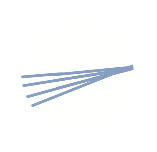

Visual Snow Syndrome(VSS) is a neurological condition that impacts the brain where it can distort vision causing tv-like static accross the vision, floaters, blue-entopic field phemomenon, night blindess, after-images, sensitivty to light, tinnitus, trails of light, and more.
after-images
trails
